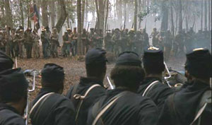

|
In 1988, perhaps the most powerful film of the year was
Mississippi Burning. Based on a real-life experience,
it was the story of the murder of three civil rights workers
in a small, 1960s Mississippi community and the ensuing
search for the culprits. To all its viewers, the violence,
intimidation, and solidarity of the white population left a
marked impression. Unfortunately, the screenwriters altered
the role of the Federal Bureau of Investigation, converting
obstructionists into heroes. Such tampering with reality
evoked a steady stream of criticism and may have cost the
film the prize for best picture in the 1989 Academy Awards.
The succeeding year, Glory may have been the
year's most powerful movie. It, too, was a story of real
life, about Col. Robert Gould Shaw and the 54th

Robert Gould Shaw
|
Massachusetts (Colored) Infantry in the Civil War. And
although the film failed to receive a nomination for best
picture at the Academy Awards, much to the chagrin of
critics and viewers, the film received the second largest
total of Oscars. But just how accurate was the film? Did it
portray black soldiers and their white officers in a proper
light? Was the regiment highlighted, the 54th Massachusetts,
representative of black military service in the Civil War?
If not, what sorts of misguided perceptions did this movie
teach the uniformed public? My answers to these questions
will be based on archival evidence and on my own book
dealing with black soldiers and white officers in the Civil
War. I will point out what I consider to be excusable and
inexcusable distortions of history in the film and ask,
where the film is purely fictional, whether it is or is not
conveying a real sense of actual events and human
relationships.
Glory revolves around two sets of characters, Col.
Robert Gould Shaw and his close friend, the fictional Maj.
Cabot Forbes, and four black soldiers, also fictional. One
of those black men, an intellectual and longtime friend of
Shaw and Forbes, serves as a nexus between the two groups,
and throughout much of the film this character named Thomas
fits comfortably with the white men.
The movie begins, appropriately enough, at the battle of
Antietam, where Shaw sustains a wound and where a Federal
repulse of the Confederate invading force enables President
Abraham Lincoln to issue the Emancipation Proclamation from
a position of greater strength. We see, better than in any
other Civil War film, the confusion, brutality, and horror
of the battlefield, but also its pageantry and excitement.
The viewer cannot help but admire the enormous courage, and
powerful sense of commitment to a cause, that enables these
tightly-packed ranks to fight in a seemingly hopeless
situation.
From this point, however, the movie conforms only loosely
to historical fact. After a savage hospital scene, the movie
picks up young Shaw at a cocktail party, where Massachusetts
governor John Andrew offers him a commission to raise a
black regiment, by implication (false) the first one of its
kind, in the presence of an apparently aged Frederick
Douglass, who was actually in his mid-forties during the
war. Shaw promptly accepts his monumental task and calls
upon his friend Cabot Forbes to assist him.
At Readville, Massachusetts, Shaw begins to assemble his
black command There he and an Irish sergeant drill and
toughen the men for the hardships of combat. Shaw and Forbes
clash as they reconcile abolitionist principles and
friendship for Thomas with military structure and the
necessity to prepare the men for battle. At the same time, a
strongly independent ex-slave named Trip grapples with the
notion of taking orders from others, especially white men,
as well as coming to rely on others for his safety. Slowly,
through attention to duty and support for the principle of
equal treatment among black and white troops, Shaw wins over
the men, except for the recalcitrant Trip.
Finally, after a rousing parade through the streets of
Boston, the 54th Massachusetts embarks for the war zone, a
theatre of tertiary importance, South Carolina. There Shaw
and his men encounter prejudice against black service in
combat. Military authorities employ them on a plundering
|

The 54th's first taste of combat,
as presented in Glory.
|
raid, which humiliates Shaw and his men, and it is only
through blackmail that the 54th is allowed to join an active
campaign that will enable its men to demonstrate valor on
the field of battle. In its first fight, the 54th
Massachusetts performs heroically and disproves all notions
that blacks did not possess the character to stand up in
combat. Trip, with years of pent up frustration against the
white race, is a terror--possibly savage--on the
battlefield, as he alone disposes of numerous Confederates.
The intellectual Thomas, on the other hand, is shaken by the
horror of battle. Nevertheless, Thomas rises above his fear
and a painful wound to kill a man and save Trip's life.
Thomas then earns the respect of Trip, who had ridiculed the
accommodationist Thomas as "Snowflake" throughout the movie,
and also of the officers and men of the 54th, because of his
insistence on staying with the regiment despite a nasty
wound. Trip, too, gains enormous respect from the men and is
nominated for a commendation by the black sergeant major.
As the 54th Massachusetts moves into position for an
attack on Fort Wagner the next day, white soldiers who had
disparaged these black men just days earlier, now cheer them
and urge, "Give 'em hell, 54th." The attack on Fort Wagner
is near suicidal, as Shaw, Trip, and others die and are
buried together. In that failed assault, however, the
courage of the officers and men of the 54th convinces the
government to recruit more black soldiers. Their death won
opportunity for others.
The Shaw we see is a sober, disciplined young man, older
and wiser in character than his twenty-five years. He
appears staunchly abolitionist but tempers this with
knowledge of what combat is like and that discipline is
necessary if his regiment is to perform well in battle. Only
through segments of actual letters to his parents, which are
read periodically and sometimes do not correspond with the
time frame of the movie, do we obtain a glimpse into his
personal side. Shaw is shown to be deeply philosophical (he
reads Ralph Waldo Emerson in his tent at night), warmly
devoted to his family and the cause, impressed by the great
responsibility of being a company and later a regimental
commander, and surprised to discover his fine leadership
qualities.
While the missives Shaw sent to his parents enable us to
see certain components of his personality, his actual
letters in the archives (but not shared with the viewers of
the film) to best friend Charley Morse reveal something very
different. This Shaw is lively and passionate, much more the
witty and frolicsome twenty-five year old. He is a popular
man, with scores of friends, and is deeply in love with a
New York woman. Like the film version, this Shaw is a
staunch abolitionist and recognizes the great responsibility
of commanding a black regiment, but he also likes and
appreciates the promotion to the rank of colonel.
The movie viewer also gets no real sense that Shaw
carried racial baggage. In the letters to Charley Morse we
see Shaw as a white man of his times. There he refers to the
debate over the use of black troops as "the nigger question"
and plays up racial stereotypes. In one letter, for example,
Shaw draws upon the white man's caricature of blacks and
claims that physical differences interfere with a black
soldier's ability to drill: "The heel question is not a
fabulous one--for some of them are wonderful in that line.
One man has them so long that they actually prevent him from
making the facings properly." This is a very different Shaw
than we see in his letters to his parents and in the film.
Unlike Shaw, the four black soldiers are not based on any
individuals in the 54th Massachusetts. Along with the
intellectual Thomas, there is the recalcitrant Trip, a
runaway who had sustained severe whippings in slavery; the
sergeant major, an ex-slave and former grave digger whose
sage counsel and solid character help the 54th develop into
an excellent regiment; and a stuttering freedman from South
Carolina, naive yet endearing in his deep sense of religion
and the way he cherishes the prospects of freedom.
In fact, the screenwriter, Kevin Jarre, may have found
greater emotional power had he relied on the actual black
soldiers of the 54th Massachusetts. What could be more
dramatic than a regiment with Frederick Douglass's son as
sergeant major, or a sergeant like William Carney, the first
black Medal of Honor recipient who rescued the flag at Fort
Wagner despite four wounds (one in each leg, another in his
chest, and the last one in his right arm), or even Sgt.
Robert J. Simmons, who sustained a mortal wound fighting for
reunion and freedom three days after a white New York City
mob had terrorized his mother and sister and clubbed to
death his seven-year-old nephew?
By comparison, the real 54th was quite different from
most black units. It was a regiment raised with considerable
fanfare throughout the North, and over seventy-five percent
of its black soldiers were born in free states. Except for
Louisiana regiments made up of free blacks, it tended to
have more skilled workers than most other black commands,
and based on the number of letters that have survived or
were published in newspapers, its men were highly literate,
probably more so than other black troops.
Because the 54th Massachusetts attracted many of the
finest young black men the North had to offer, it took the
lead in several key issues. Along with its sister regiment,
the 55th Massachusetts Infantry, which drew a number of its
black and white leaders from the 54th, it initiated the
fight for equal pay, and steadfastly refused a substandard
wage for the same work and risks. When Governor Andrew
attempted to intervene and provide the difference between
the U.S. Government's pay for black and white soldiers, the
regiment again protested. The equal pay issue was a matter
of principle, that the federal government treat all its
soldiers the same, and not one of money. in another area of
discrimination, its black non-commissioned officers
challenged the policy that kept qualified black men from
commissions as officers in combat units. Although blacks and
many whites in the regiment failed to win the fight over the
promotion of Hospital Steward Theodore Becker to assistant
surgeon, due to the objections of two white officers, they
eventually won the promotion of three men to lieutenancies
late in the war.
The 54th's white officers, too, were different from those
of most black units. Governor John Andrew had sought "for
its officers--particularly its field officers--young men of
military experience, of firm anti-slavery principles,
ambitious, superior to a vulgar contempt for color, and
having faith in the capacity of colored men for military
service." With the likes of Shaw, Edward and Penrose
Hallowell, and many others, Andrew probably assembled more
active abolitionists for it and the 55th Massachusetts
Infantry than for any other black units which served in the
war. Many of them fully supported their black men in the
battles over equal pay, promotion of qualified individuals,
and the use of black regiments in combat.
Apparently, in departing from historical fact the
screenwriter was using the 54th Massachusetts as a vehicle
to represent the experience of most black soldiers. In the
film the viewer senses correctly that a preponderance of
black soldiers were ex-slaves. Of the 178,000 black males
who actually served in the Union Army, 144,000 came from
slave states. In the movie (again, contrary to fact), Shaw
relied on a white sergeant to drill his troops. The
impression conveyed is correct, however, because during the
war, most black regiments did have white first sergeants,
whose purpose was to teach various tactical maneuvers to the
troops and who served as replacements when vacancies as
lieutenants developed. The real 54th Massachusetts, however,
used black enlistees, "who have been well drilled, & are
acting sergeants. They drill their squads with a great deal
of snap," insisted Shaw.
Rather than adhere rigidly to historical accuracy, the
screenwriter opted to create affairs and events that
dramatized certain important experiences. They depict Trip
as the leader in the rejection of unequal pay, when Shaw was

Trip was played by Denzel
Washington, who won an Academy Award for the
role.
|
actually the one who declared unacceptable $7 per month,
plus $3 for a clothing allowance, while white privates
earned $13 per month and $3 for clothing and higher ranks
received higher pay. By having a black soldier lead the
protest, though, the screenwriter conveyed a critical
message, that even within the circumscribed world of
military service, blacks were a force. In truth, they had
means of influencing the world around them, of taking
matters into their own hands when individuals or the system
were treating them unfairly.
Again, the screenwriter manufactured a fictional
confrontation between Colonel Shaw and a major who is a
quartermaster, to obtain necessary shoes for his troops.
Shaw coerces the quartermaster through physical intimidation
into providing basic necessities for his men. In retrospect
this event smacks of improbability. It is difficult to
believe that a colonel could not obtain shoes and uniforms
from a major for his troops who were stationed in
Massachusetts in close proximity to where the shoes and
uniforms were made, or that the major would justify his
actions on a shortage. However, the incident does highlight
the intense racial difficulties and downright obstructionist
attitude that many whites adopted toward black soldiers.
Time after time, particularly in 1862 and 1863, Union
soldiers and Northern civilians attempted to undercut the
great experiment of black military service. White mobs in
and out of uniform stoned black commands and picked fights
with black soldiers. Black units were assigned to the most
degrading duties and provided with inferior to inadequate
equipment to accomplish assignments. It was a conscientious
effort to debase black soldiers and their white officers,
and only their performance in combat quelled this abuse.
Shaw's fight for shoes also suggests the very real
importance of white officers standing up for their black
soldiers. Racial discrimination in the North and enslavement
in the South had convinced blacks to look upon whites with a
jaundiced eye. Certainly a willingness on the part of whites
to command black soldiers gave them standing with their
enlisted men, but it was still imperative that white
officers perform acts that indicated a real interest in the
well-being of their black troops. Often white officers
accomplished this by assisting black soldiers in personal
difficulties that arose in the transition from Slavery to
freedom, or by taking a public stand in opposition to whites
and in support of their black men. In the film it was only
when Shaw took a personal interest in the welfare of his men
in fighting discrimination and obtaining shoes that he
really began to win their confidence. A willingness to
command them gave Shaw some respect; waging a successful
battle against discrimination won their hearts
Even though Shaw never, as the movie incorrectly depicts,
had to blackmail his superior officers into sending the 54th
Massachusetts into battle, the hesitancy and in many cases
unwillingness of high-ranking officers to employ black
troops in combat was very real. Many whites, including
general officers, believed the black race lacked the
character to sustain itself during the arduousness of
combat. One, in fact, Maj. Gen. Truman Seymour, was second
in command of the attack on Fort Wagner. While planning the
assault Seymour told his superior officer, "Well, I guess we
will let Strong lead and put those d---d niggers from
Massachusetts in the advance; we may as well get rid of them
one time as another." Clearly Seymour was suggesting that
they dispose of the problem of the black soldiers in the
department, and the entire issue of black military service,
in this one assault.
Where the screenwriter excelled is his masterful
portrayal of the "human" dimensions of the military
experience. Nothing was more thrilling for black soldiers,
as the movie indicates, than receiving weapons and donning
the blue uniform for the first time. In that moment the
federal government was acknowledging that blacks could
contribute in real and significant ways in times of national
crisis. The Union was admitting that blacks were an integral
component of this nation, and the enormous pride that black
soldiers felt at that instant was something they never
forgot. "This was the biggest thing that ever happened in my
life," recalled one black veteran. "I felt like a man with a
uniform on and a gun in my hand." Another black soldier, a
former slave, may have described it best when he wrote, "I
felt freedom in my bones."
Moreover, when the federal government placed that blue
uniform on the black man, and a rifled musket in his hand,
it signalled more clearly than ever before that he was to
take an active role in freeing his family and ancestors from
bondage. "We are fighting for liberty and fight," pronounced
a black sergeant, "and we intend to follow the old flag
while there is a man left to hold it up to the breeze of
heaven. Slavery must and shall pass away." Black soldiers
became the embodiment of the hopes and dreams of millions
and millions of blacks throughout the North and South, and
they vowed to endure any and all hardships to terminate the
institution of slavery.
The movie displays with wonderful clarity the way combat
draws men together. Soldiers in battle depend on one another
for survival, and that forges powerful bonds among them.
That first engagement of the 54th Massachusetts forever
endeared Shaw to the men. All the drilling, all the
training, all the hard work paid dividends in battle. He had
prepared the men well for combat and then stood alongside
them throughout the fight. All now knew he had been hard on
them to save lives and to enhance their performance on the
battlefield.
Even more striking is the relationship that develops
between Thomas and Trip. Other than their racial heritage
and their outsider status with the other soldiers, the two
men have little in common. Thomas is an intellectual who has
enjoyed the benefits that few of his race have. He is
polished, urbane, and gentlemanly. Trip, on the other hand,
is an ex-slave, beaten terribly during bondage, who has
survived by looking out for himself. Unlike Thomas, he has
very little hope the white man will reform his ways of
mistreating men and women of African descent, and he is
openly hostile to all who take orders from whites. Trip
regularly taunts and humiliates Thomas, until the two men
enter combat. There, with their lives in jeopardy, Thomas
rises up in a fit of passion and saves Trip's life. At that
instant a bond is established between two very dissimilar
men, and also between each one of them and their comrades in
the 54th. From that moment on, when lives are at stake, both
soldiers know that they can count on one another and their
fellow soldiers.
The night before the assault on Fort Wagner, in what may be
the most effective scene of the entire movie, the black
soldiers sit around a campfire and sing spirituals. They are
an entirely different set of fellows than had assembled in
Massachusetts just five months earlier, and have gathered
together to cleanse their souls on the eve of combat. There
they find solace in religion and one another. Soldiers
announce their belief in a just God who will see them
through the day or take their lives in a noble cause and
permit them entry into a new world of everlasting peace and
freedom. From God they derive strength and collectively they
will harness that might in battle. Around from one soldier
to another it goes, and when it is Trip's turn he makes a
confession. He never had a family and had always been a
loner. But for the first time in his life he feels there are
others upon whom he can rely. In an act that requires all
his courage, he admits that the 54th Massachusetts is now
his family.
Such adaptations with historical fact help to develop
very real underlying concepts, but some errors in the movie
serve no apparent purpose and only convey a false image. In
such instances the uninformed audience is misled and the
film loses credibility with knowledgeable viewers. What was
the benefit of conveying the impression that the 54th
Massachusetts was the first black regiment created in the
war? Was it necessary for the screenwriter to alter the
chronology and have Shaw discussing the "recent" battle of
Fredericksburg, fought in December 1862, while he was
whipping his black soldiers into shape, even though Governor
Andrew did not receive authorization from the War Department
to organize the 54th Massachusetts until the end of January
1863? Why did the screenwriter include the fictional
execution by Col. James Montgomery of a black soldier for
striking a white women? Did not the viewer already get the
impression that Montgomery was a hard man, who advocated a
harsh war and had a low opinion of his black troops? In real
life, prior to the assault on Fort Wagner, Gen. Strong rode
up to the 54th, gave its men some words of encouragement,
and asked if the flag carrier fell, who would take over his
duties. Shaw removed a cigar from his lips and replied
calmly, "I will." In the movie, though, it is Shaw asking
the question and Thomas delivering the response. Was not the
real experience more dramatic? Was it necessary for Thomas
to step forward? Had not his performance a the fight on
James Island, and his insistence on staying with the
regiment despite a fairly serious wound, convinced us that
he had bonded well with his comrades? And what was the point
of feeding the viewers inaccurate and misleading information
at the end of the film? The screenwriter asserted that over
one-half the 54th Massachusetts Infantry were "lost," which
conveys to the less informed viewer the message that they
perished. In fact, slightly over forty percent were
casualties (killed, wounded, missing, or captured), no doubt
a huge number, but considerably different in magnitude. They
then state that "Fort Wagner never fell," which is flatly
wrong and misleads the viewer into thinking that the attack
lacked purpose. Fort Wagner controlled some gun positions on
Morris Island, which in turn were vital in the protection of
part of Charleston harbor. After the attack, Federals
employed a traditional siege and within two months forced
the Confederates to abandon Fort Wagner.
The most unfortunate episode, though, was the whipping of
Trip for desertion. Other than the battle scenes, this was
easily the most savage moment of the film, one fraught with
errors that worked at cross-purposes with other events in
the movie. First, Trip's offense was absence without leave,
not desertion. Of all infractions, AWOL was probably the
most common in the Civil War, usually punishable by some
fatigue duty, docking one's pay for a month, or a few days
in the guard house. Second, Trip received no trial by
general or regimental court martial, which is required by
the Articles of War. Third, whipping had been a rare
punishment before the war and was abolished by Act of
Congress on August 5, 1861. The scene, then, assigns to Shaw
qualities of brutality that he probably did not possess and
also a willingness to disregard the Articles of War, which
probably would have led to his own court martial. It leaves
the viewer with the impression that whipping was a fairly
common practice in black units, when extensive research
uncovered only one instance of flogging. An officer has two
drummer boys whipped and as a result the black troops
mutinied when they believed that officer would go
unpunished. In the end, the officer was dismissed from the
service and two black soldiers were executed for mutiny and
six others received jail sentences.
The whipping episode also conveys to the viewer the sense
that black soldiers would tolerate such abuse. It strips
from blacks the role of active players in their world and
suggests that as free men they would meekly accept this
brutality. In the Civil War, even though blacks were
subordinate to white officers and within the structured
environment of the army, they were able to assert themselves
and develop individual and collective identities. There were
natural bonds among them forged through the institution of
slavery, racial discrimination and, most importantly,
combat. They were, therefore, highly sensitive to acts by
whites that smacked of unfairness or physical brutality.
Even such punishments as tying up unruly soldiers were
perceived as excessive. Time after time black troops
responded by cutting comrades free, and on numerous
occasions they launched full-scale mutinies against this
sort of mistreatment.
Despite these shortcomings, Glory is a fine movie
that all should see. While it does misinform its audience
and frequently diverges from historical accuracy, the film
depicts many of the personal experiences of service in the
United States Colored Troops extremely well. Since most
Americans probably had no idea blacks fought in the Civil
War, let alone so valiantly, that knowledge may help to
alter the public's perception of black contributions to the
development of this country. And that is all for the good.
If we are to treat minorities with justice in the future, we
must begin by acknowledging and lauding their efforts in the
past.
I give Glory thumbs up.
Source: Joseph T. Glatthar in The History Teacher 24:4, (August 1991), 475-85.
|